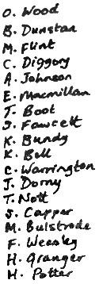
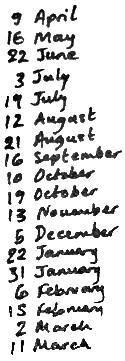

Hogwarts Okul Kütüphanesi'ne Aittir.
Ödünç Alanın Adı İade Tarihi
 
Bir uyarı: Bu kitabı parçalar, yırtar, lime lime eder, katlar, kıvırır, biçimini bozar, paçavraya çevirir, kirletir, lekeler, fırlatır, düşürür ya da ona saygısızlık ederseniz, yetkim ne kadarına el veriyorsa başınıza o kadar iş açılacaktır.
Irma Pince, Hogwarts Kütüphanecisi